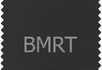
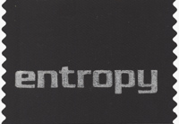

The Demise of BMRT & entropy


The entropy ribbons were being handed out at SIGGRAPH 2002 to note the passing of a fine RenderMan renderer. There never was a BMRT ribbon, I just made it to note its passing to on same day as its sibling entropy.
The following is a recount of some of the events as close as I recall. There has been some confusion about the events and their meanings and so I felt the need to provide this information.
But first a disclaimer: Although I am somewhat familiar with most of the parties involved, I do not know the particulars of exactly what happened but I do know a little more about the details from one side of the story and so my view will be somewhat biased in that direction given what I do know. So do bear that in mind.
early 1990s
Larry Gritz began write what would be known as BMRT to as an aid for his Master's degree.
1994-1995
Nearing the completion of his PHD work Larry starts making BMRT available to various acquaintances. Early in 1995 he places it on the WEB for anybody to start using it. In the spring he is hired by Pixar to help with the development of PRMan.
1995-2000
While at Pixar, Larry continues releases for BMRT. Matching a lot of the same features as PRMan. However, there were various features missing. The reasons for those missing features were either he felt he was too close on the developments of those features or there were other technical reasons.
2000
After being frustrated with the direction Pixar was going with their software, Larry left Pixar with several of his co-workers to form Exluna.
2001
At SIGGRAPH Exluna demonstrates their new RenderMan renderer, entropy. It was built from the same code base as BMRT. But in many ways it was redesigned. Entropy had all of the pluses of BMRT and very little of the minuses. It made a fine replacement for BMRT.
March 05, 2002
Pixar sues Exluna for patent for willful patent infringement. (I am a little foggy on this. But I believe that specifically it was for the use of stochastic sampling. A few days later Exluna posts on their web site. 1. That Pixar's suit is without merit. 2. In fact they do not use stochastic sampling at all, but use an analytic method, that they have applied patents for. 3. That they intend to defend themselves and fight Pixar's suit.)
April 02, 2002
Pixar announces PRMan-11 which offers a lot of the same features that Entropy has.
Pixar files Trade Secret against Exluna
May 16, 2002
Pixar amends their suit to allege that the three ex-employees, forming Exluna, misappropriated trade secrets. In layman's terms, in addition to suing the corporation, Exluna, Pixar's new suit is suing the ex-employees individuals personally.
Pixar and Exluna Settle Lawsuit
July 22, 2002
Pixar drops the suit against Exluna and the amended suit in which they were suing the three founders personally. The price: the demise of BMRT and entropy. On the same day Exluna announces its merger with nVidia. The merger happened earlier this year, but was not make public until this date.
We may never know the whole truth to know who was right and who was wrong because the case was settled out of court. But gleaming from the above information. Exluna was going to fight the case originally. They felt they had sufficient proof to win the case.
But then Pixar's lawyers felt they had sufficient evidence to claim IP misappropriation. On these grounds Pixar amended the lawsuit to personally sue the 3 founders.
So the Exluna founders had to make some decisions. They still felt that they would win the case, but if they continued to defend themselves further (probably over the next couple of years), they would be spending all of their time either in court or preparing for court. So they decided to bow to Pixar's wishes to remove entropy and BMRT so they could focus their attention on other things.
Tal Lancaster
Last modified: Sun Nov 10 21:39:26 PST 2002